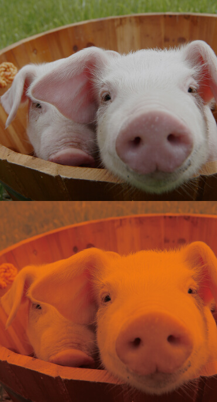
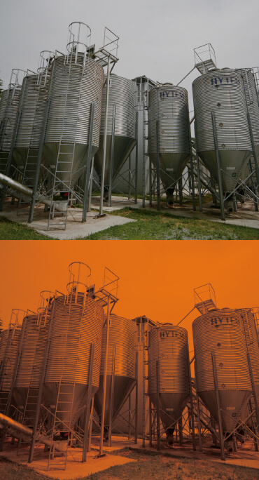

北海道から九州まで、家族経営の農場が心を込めて育てる「和豚もちぶた」。もちっとした食感と甘い脂は、育種・飼料・飼育のすべてに理由があります。
「なんとなくおいしい」ではなく、「だからおいしい」。生産のこだわりを消費者に伝わる言葉で発信することが、ブランドの値打ちになります。

大量生産ではなく、家族の目が届く規模の農場だけ。1頭1頭に手をかけて育てます。

おいしさは食べるものから。専用飼料と40年の育種改良が、もちっとした食感をつくります。
生産から食肉流通まで自社グループで一貫。鮮度と品質をそのままお店へ届けます。
「今夜のおかず」を探す人に、和豚もちぶたのレシピが届く。週1本の発信を積み重ねることが、指名買いを育てます。※撮影・投稿の運用体制もあわせてご提案します
| 社名 | グローバルピッグファーム株式会社 |
|---|---|
| 本社 | 群馬県渋川市北橘町上箱田800 TEL 0279-52-3753 |
| 設立 | 1983年6月 |
| 代表 | 代表取締役社長 桑原 政治 |
| 資本金 | 1億7,920万円 |
| 従業員数 | 194名（2025年2月時点） |
| 事業内容 | ブランド豚「和豚もちぶた」の生産・食肉流通／育種改良・種豚生産／飼料供給／養豚コンサルテーション |
| 生産体制 | 全国58農場（グループ生産農場）／年間出荷 約53万頭 |